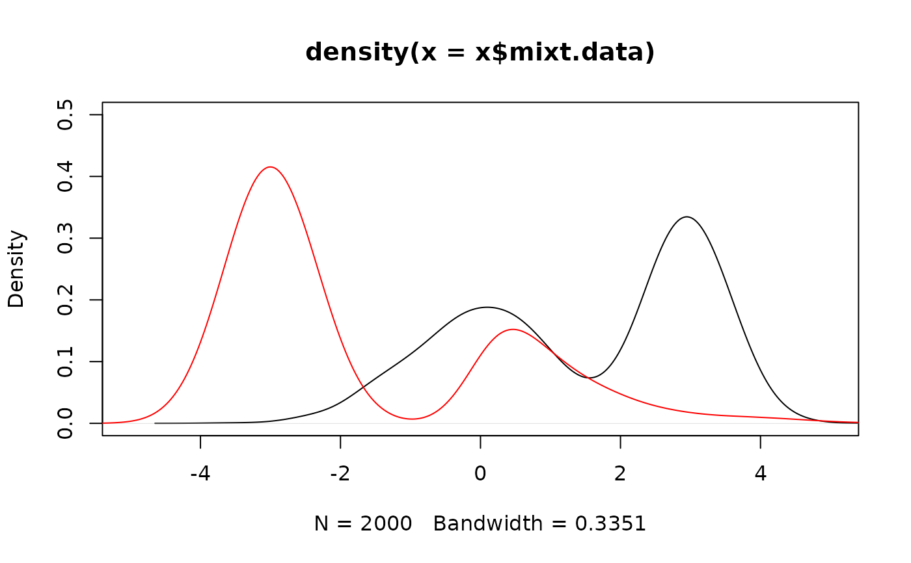
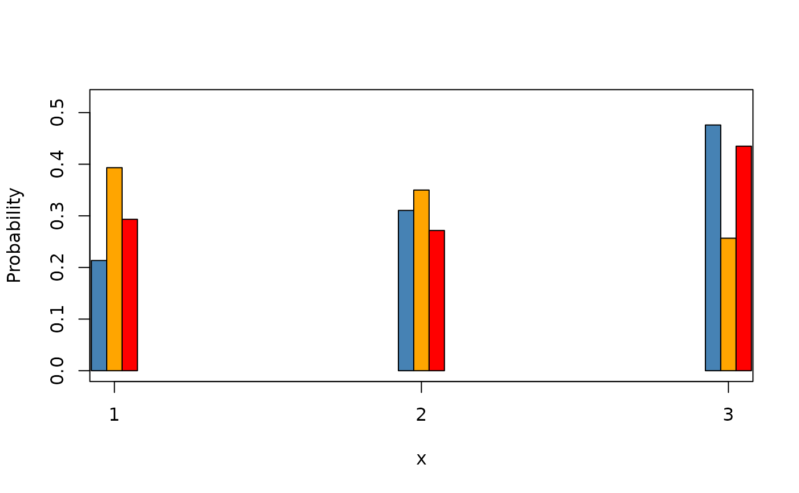

Simulate a two-component mixture model following the probability density function (pdf) l such that l = p*f + (1-p)*g, with f and g the mixture component distributions, and p the mixing weight.
Arguments
- n
Number of observations to be simulated.
- weight
Weight of the first component distribution (distribution f) in the mixture.
- comp.dist
A list of two elements corresponding to the component distributions (specified with R native names) involved in the mixture model. These elements respectively refer to the two component distributions f and g.
- comp.param
A list of two elements corresponding to the parameters of the component distributions, each element being a list itself. The names used in each list must correspond to the native R argument names for these distributions. These elements respectively refer to the parameters of f and g distributions of the mixture model.
Value
An object of class twoComp_mixt, containing eight attributes: 1) the number of simulated observations, 2) the simulated mixture data, 3) the support of the distributions, 4) the name of the component distributions, 5) the name of the parameters of the component distributions and their values, 6) the mixing proportion, 7) the observations coming from the first component, 8) the observations coming from the second component.
Author
Xavier Milhaud xavier.milhaud.research@gmail.com
Examples
## Mixture of continuous random variables:
sim.X <- twoComp_mixt(n = 2000, weight = 0.5,
comp.dist = list("norm", "norm"),
comp.param = list(list("mean"=3, "sd"=0.5),
list("mean"=0, "sd"=1)))
print(sim.X)
#>
#> Call:twoComp_mixt(n = 2000, weight = 0.5, comp.dist = list("norm",
#> "norm"), comp.param = list(list(mean = 3, sd = 0.5), list(mean = 0,
#> sd = 1)))
#>
#> Number of observations: 2000
#>
#> Simulated data (first 5 obs.):
#> 2.205128 3.4661 1.85764 0.4565033 -0.4374854
#> Simulated observations coming from the 1st component (first 5 obs.):
#> 2.205128 3.4661 2.82389 3.07191 4.207544
#> Simulated observations coming from the 2nd component (first 5 obs.):
#> 1.85764 0.4565033 -0.4374854 1.814761 0.2525568
#>
sim.Y <- twoComp_mixt(n = 1200, weight = 0.7,
comp.dist = list("norm", "exp"),
comp.param = list(list("mean"=-3, "sd"=0.5),
list("rate"=1)))
plot(sim.X, xlim=c(-5,5), ylim=c(0,0.5))
plot(sim.Y, add_plot = TRUE, xlim=c(-5,5), ylim=c(0,0.5), col = "red")

## Mixture of discrete random variables:
sim.X <- twoComp_mixt(n = 2000, weight = 0.5,
comp.dist = list("multinom", "multinom"),
comp.param = list(list("size"=1, "prob"=c(0.3,0.4,0.3)),
list("size"=1, "prob"=c(0.1,0.2,0.7))))
plot(sim.X)
